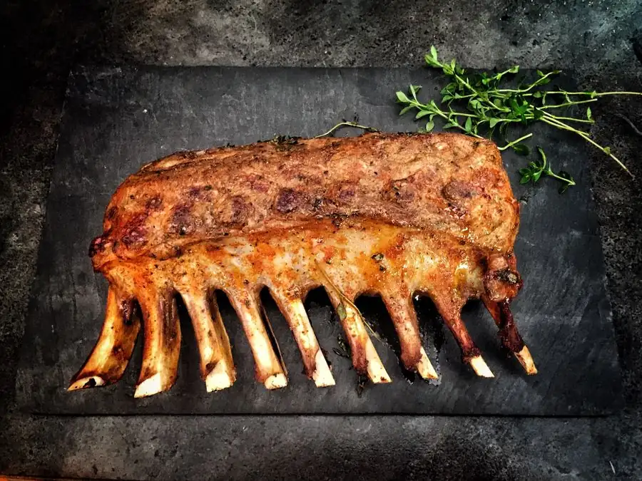
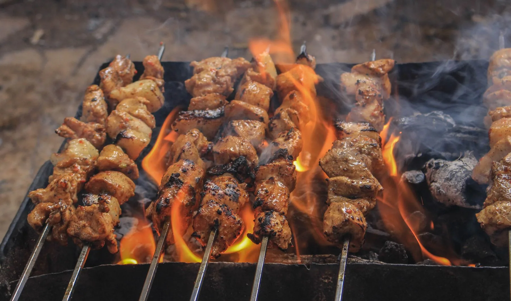
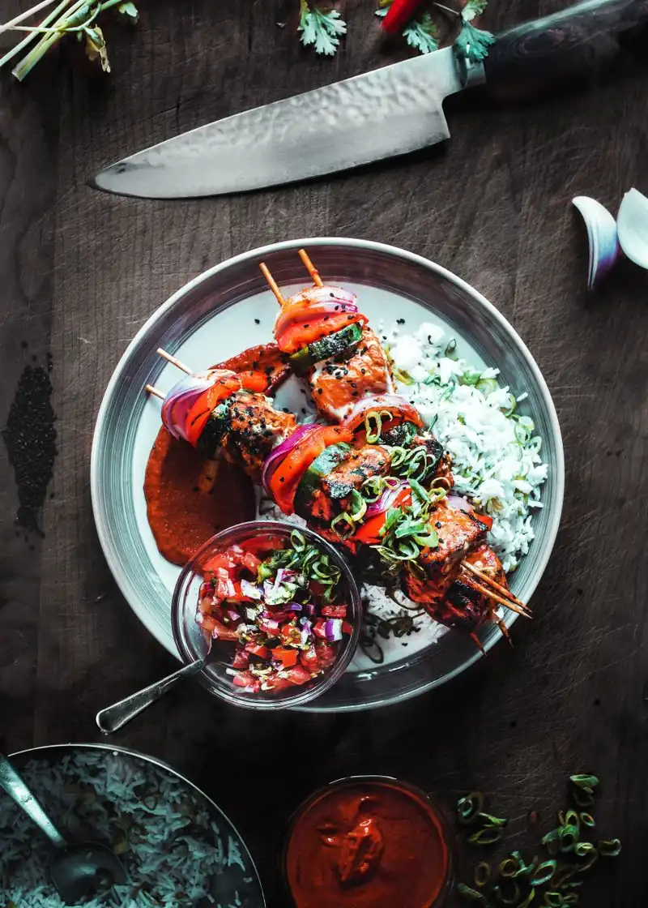
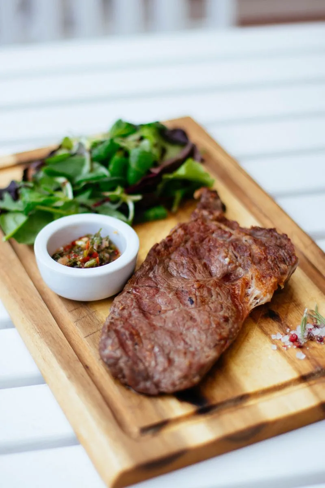
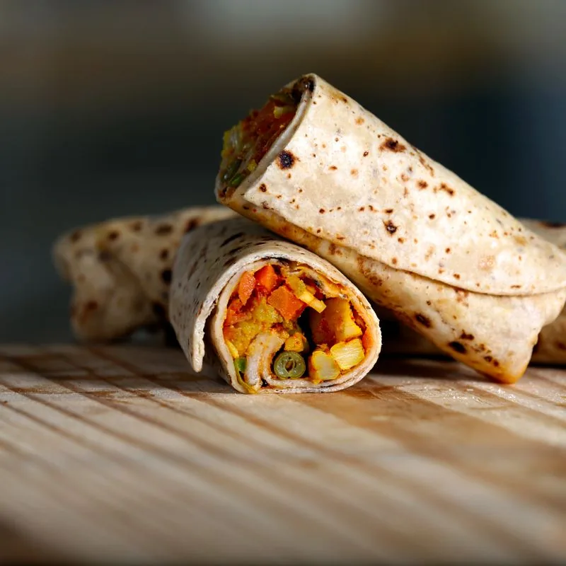
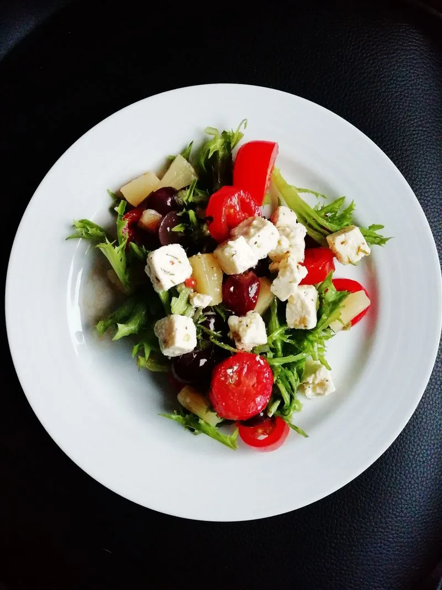
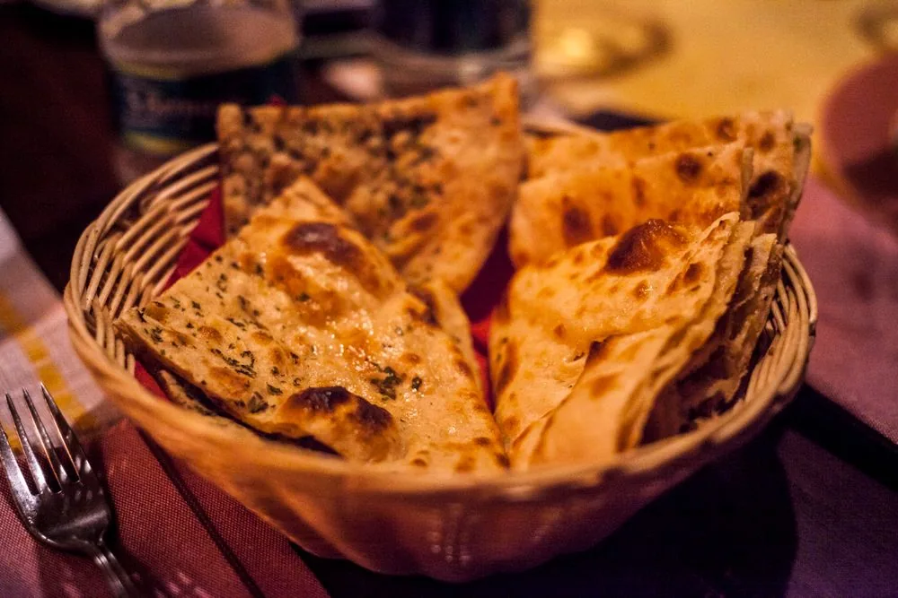
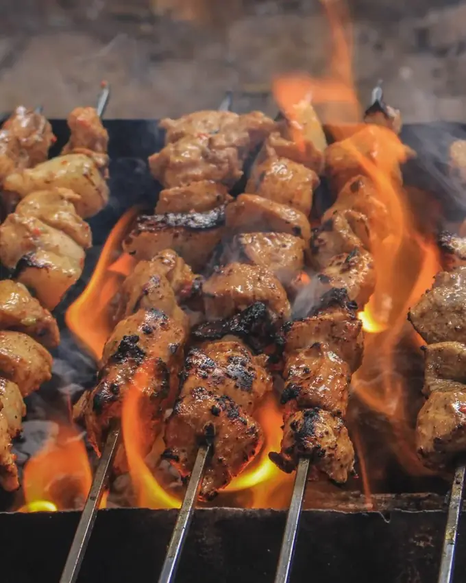

Kuzu kaburga
Yavaş ateşte, kemiğinden ayrılana kadar. Tuz, karabiber, kekik; başka bir şey karışmaz.
Güncel fiyat için yazınBunu sor

Mahallenin ocakbaşı. Kuzu şiş, kaburga, antrikot; masaya sıcak lavaşla gelir. Kömür siz gelmeden yanmış olur.
Rezervasyon / Sipariş için yazın Formu doldurun, size dönelim. Salı–Pazar, öğlen 12:00'den itibaren.Menünün tamamı değil, en çok sorulanlar. Güncel fiyat ve gün menüsü için yazın, aynı gün dönelim.

Yavaş ateşte, kemiğinden ayrılana kadar. Tuz, karabiber, kekik; başka bir şey karışmaz.

Şiş elde dizilir, közde döner. Yanında közlenmiş biber, domates ve soğan salatası.

Mühürlenir, dinlenir, dilimlenir. Pişirme derecesini siz söylersiniz.



Her masaya ilk gelen. Ocakta ısınır, sepette gelir, bitince yenisi gelir.

Kapı açılmadan çok önce kömür yakılır. Kor, alev bitip de kızıl bir yatak kalınca işe girer. Çünkü şişin ihtiyacı olan şey ateş değil, sabırlı ısıdır.
Bizim işimiz basit: iyi eti seçmek, şişi elle dizmek, ocaktan gözünü ayırmamak. Gelen misafir şunu bilsin isteriz: tabağınıza gelen şey, ocağın başındaki ustanın kendi yiyeceği gibi pişmiştir.
Hafta sonu akşamları masa kalmayabilir. Rezervasyon yapmanızı öneririz.
Adresimizi ve yol tarifini rezervasyonu onaylarken mesajla göndeririz. Siz sadece nereden geleceğinizi yazın, kolay yolu biz tarif edelim.
Yol tarifi için yazınTarihi, saati ve kaç kişi olduğunuzu yazın. Paket siparişi de aynı formdan. Size dönüp onaylarız.
Örnek sitedir; form gerçek bir işletmeye değil, demo uç noktasına gider.